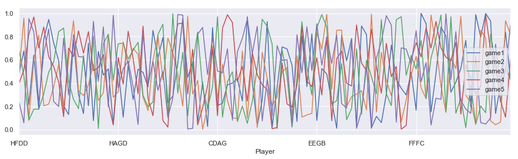
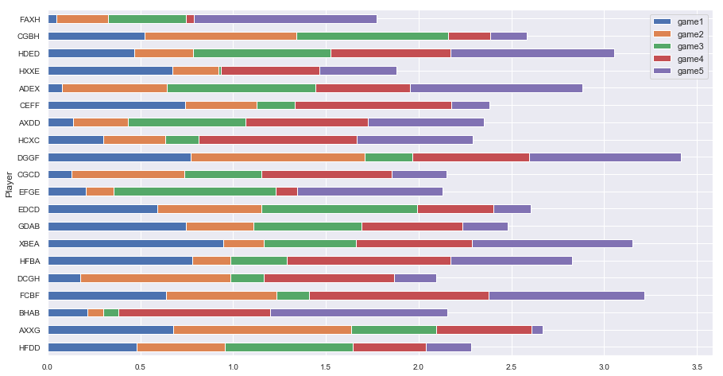
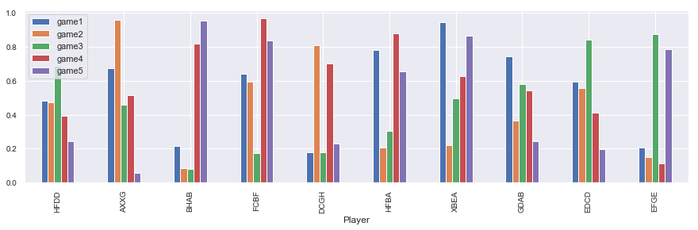
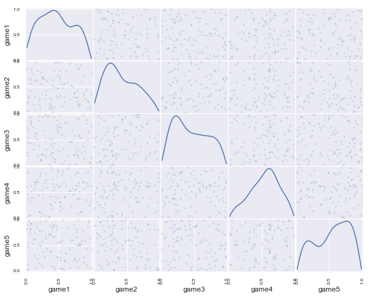
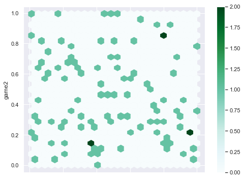

Data Visualization
DataFrame Preliminaries in Pandas
In this norebook ww will create some data visualization by implementing Pandas plot and other functions.
import pandas as pd
import numpy as np
import random as random
import seaborn as sns
import matplotlib.pyplot as plt
%matplotlib inline
sns.set()
To create new data frame from list of dictionaries and visualize them.
Here we will create first a list with collection of dictionaries. Each of the dictionary will have keys and values. Using this list of dictionaries, we will create another dataframe. The keys of the dictionary will serve as the column names.
LD = []
letter = ['A','B','C','D','E','F','G','H','X']
for i in range(100):
LD.append({'Player' : random.choice(letter)+\
random.choice(letter)+\
random.choice(letter)+\
random.choice(letter),\
'game1' : random.uniform(0,1),\
'game2' : random.uniform(0,1),\
'game3' : random.uniform(0,1),
'game4' : random.uniform(0,1),
'game5' : random.uniform(0,1)})
DF = pd.DataFrame(LD)
DF=DF.set_index("Player")
DF.head(3)
| game1 | game2 | game3 | game4 | game5 | |
|---|---|---|---|---|---|
| Player | |||||
| HFDD | 0.481069 | 0.474633 | 0.689590 | 0.395129 | 0.242217 |
| AXXG | 0.676598 | 0.959418 | 0.460717 | 0.513393 | 0.058434 |
| BHAB | 0.215308 | 0.086760 | 0.080839 | 0.818904 | 0.953768 |
Data Visualization with Pandas
- Individual columns of data can be visualized as line plot
DF.plot(figsize = [15,4])
<matplotlib.axes._subplots.AxesSubplot at 0x26c35149d30>

- Abar plot can be created with
plot.barhfor horizontal bar with extra settingstacked=Truefor adding contribution from each column data.
DF[0:20].plot.barh(stacked=True,figsize=(15, 8),fontsize =10)
<matplotlib.axes._subplots.AxesSubplot at 0x26c36740278>

- Verticle bar can be created with
plot.bar()functionality withstacked=Falsesetting.
DF[0:10].plot.bar(stacked=False,figsize=(15, 4),fontsize =10)
<matplotlib.axes._subplots.AxesSubplot at 0x26c37193a58>

- pandas plotting provides
scatter_matrixfunctions to plot col by col scater plot withkernel density estimation- kde.
from pandas.plotting import scatter_matrix
scatter_matrix(DF, alpha=0.2, figsize=(10, 8), diagonal='kde')
plt.show()

- Pandas plotting also has
plot.hexbin()functionality for beautiful scatter plot.
DF.plot.hexbin(x='game1', y='game2',figsize=(8, 6), gridsize=25)
<matplotlib.axes._subplots.AxesSubplot at 0x26c39cba128>
